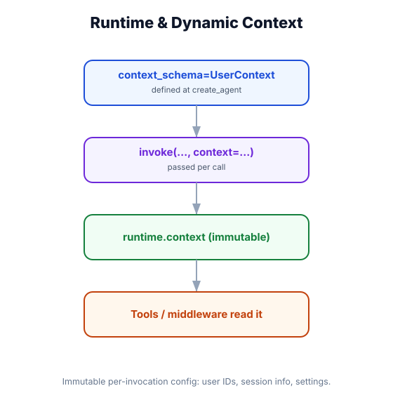

Runtime Context — Passing Secure Data to Agents
What you'll learn: The context_schema pattern for passing caller identity and credentials to an agent without exposing them to the model, how tools access context via runtime.context, and how to build multi-tenant auth flows.

↗ Open full size · ⬇ Edit in Excalidraw — labels use real LangChain classes.
When you walk into a secure office, your badge identifies who you are and what you're allowed to access. But the badge data doesn't appear in your emails — it's a separate channel. Runtime context is the agent's badge: it identifies the caller (user_id, tenant_id, permissions) and is available to tools, but it's never sent to the model as part of the conversation. The model can't leak what it doesn't see.
The Three Channels for External Data
| Channel | What it is | Visible to model? |
|---|---|---|
| messages | Conversation history — what the user said and what the agent replied | Yes — full visibility |
| state_schema | Custom agent state fields (cart items, task status, etc.) — the agent's working memory | Indirectly — tools can write to state, then the agent reads it via messages |
| context_schema | Caller identity and runtime metadata (user_id, tenant_id, permissions, auth tokens). Passed at invoke time, available to tools via runtime.context |
Never — tools use it, model never sees it |
Defining and Using context_schema
from pydantic import BaseModel
from typing import Literal
from langchain.agents import create_agent
from langchain.chat_models import init_chat_model
from langchain.tools import tool
from langchain.tools import ToolRuntime
from langchain_core.messages import HumanMessage
# ── 1. Define what the caller can pass ─────────────────────────────────────────
class UserContext(BaseModel):
user_id: str
tenant_id: str
role: Literal["admin", "editor", "viewer"] = "viewer"
auth_token: str # Never goes to the model!
# ── 2. Tools receive context via runtime.context ───────────────────────────────
@tool
def get_sensitive_report(report_type: str, runtime: ToolRuntime) -> str:
"""Retrieve a business report.
Args:
report_type: Type of report (e.g., 'revenue', 'headcount').
"""
ctx = runtime.context # UserContext instance — fully typed!
# Authorization check using runtime context
if ctx.role == "viewer" and report_type == "revenue":
return "Access denied: viewers cannot access revenue reports."
# Scope database query to this tenant
query = f"SELECT * FROM reports WHERE tenant_id = '{ctx.tenant_id}' AND type = '{report_type}'"
# db.execute(query) — scoped to tenant
return f"Report '{report_type}' for tenant {ctx.tenant_id}: [data here]"
@tool
def perform_admin_action(action: str, runtime: ToolRuntime) -> str:
"""Perform an admin-only action.
Args:
action: The admin action to perform.
"""
if runtime.context.role != "admin":
raise PermissionError(f"Admin role required. Current role: {runtime.context.role}")
return f"Admin action '{action}' performed by {runtime.context.user_id}"
# ── 3. Create the agent ────────────────────────────────────────────────────────
agent = create_agent(
model=init_chat_model("openai:gpt-4o-mini"),
tools=[get_sensitive_report, perform_admin_action],
context_schema=UserContext,
system_prompt="You are a business intelligence assistant.",
)
# ── 4. Invoke with context ─────────────────────────────────────────────────────
# Context is passed via config["configurable"]["context"]
result = agent.invoke(
{"messages": [HumanMessage("Get me the revenue report")]},
config={
"configurable": {
"thread_id": "session-001",
"context": {
"user_id": "alice-123",
"tenant_id": "acme-corp",
"role": "admin",
"auth_token": "eyJhbG...", # real token — never reaches the model
}
}
}
)
print(result["messages"][-1].content)Multi-Tenant Authorization Pattern
from fastapi import FastAPI, Request, HTTPException, Depends
from pydantic import BaseModel
from langchain.agents import create_agent
from langchain.chat_models import init_chat_model
from langchain_core.messages import HumanMessage
import jwt # pip install python-jose
app = FastAPI()
# ── Context schema ─────────────────────────────────────────────────────────────
class AuthContext(BaseModel):
user_id: str
tenant_id: str
permissions: list[str]
# ── Auth middleware (FastAPI) ──────────────────────────────────────────────────
async def get_auth_context(request: Request) -> AuthContext:
"""Extract and validate the JWT, return typed context."""
token = request.headers.get("Authorization", "").replace("Bearer ", "")
if not token:
raise HTTPException(status_code=401, detail="Missing auth token")
try:
payload = jwt.decode(token, "SECRET_KEY", algorithms=["HS256"])
return AuthContext(
user_id=payload["sub"],
tenant_id=payload["tenant"],
permissions=payload.get("permissions", []),
)
except jwt.JWTError:
raise HTTPException(status_code=401, detail="Invalid token")
# ── Agent setup ────────────────────────────────────────────────────────────────
agent = create_agent(
model=init_chat_model("openai:gpt-4o-mini"),
tools=[get_sensitive_report, perform_admin_action],
context_schema=AuthContext,
)
# ── API endpoint — context flows from JWT → runtime.context → tools ───────────
@app.post("/chat")
async def chat(
message: str,
auth: AuthContext = Depends(get_auth_context)
):
result = agent.invoke(
{"messages": [HumanMessage(message)]},
config={
"configurable": {
"thread_id": f"{auth.tenant_id}:{auth.user_id}",
"context": auth.dict(),
}
}
)
return {"response": result["messages"][-1].content}
# The JWT token is validated → context is created → passed securely to tools
# The model NEVER sees the token, user_id, or permissions — only tool resultsAccessing Context in Middleware
from langchain.agents.middleware import AgentMiddleware
from langchain.agents.middleware import before_model, wrap_tool_call
class PermissionMiddleware(AgentMiddleware):
"""Block tool calls the user doesn't have permission for."""
TOOL_PERMISSIONS = {
"get_sensitive_report": "reports:read",
"perform_admin_action": "admin:execute",
"delete_record": "records:delete",
}
@wrap_tool_call
async def check_permission(self, tool_name, tool_args, next):
required_permission = self.TOOL_PERMISSIONS.get(tool_name)
if required_permission:
user_permissions = self._context.permissions # from AuthContext
if required_permission not in user_permissions:
# Block the tool call — return a denied message instead
return f"Permission denied: requires '{required_permission}'"
return await next(tool_args)
agent = create_agent(
model=init_chat_model("openai:gpt-4o-mini"),
tools=[get_sensitive_report, perform_admin_action],
context_schema=AuthContext,
middleware=[PermissionMiddleware()],
)Don't use context_schema to pass large amounts of data (documents, long prompts, configuration). It's designed for small, structured identity/auth data. For injecting content into the model's context, use the @dynamic_prompt middleware hook or the before_model hook to inject it as a message. Context is a secure identity channel, not a content channel.
Real-World Use Case
🏥 Healthcare AI Platform
A clinical AI platform uses context_schema with fields: clinician_id, facility_id, ehr_session_token, patient_access_scope (which patients this clinician can access). Every tool that queries patient data uses runtime.context.ehr_session_token to make scoped EHR API calls — not by reading credentials from the conversation, but from a secure side-channel. The model never sees the session token. Audit logs record which clinician invoked which tool for which patient. Compliance is maintained without any manual credential scrubbing.
Use context_schema (a Pydantic model) to define what the caller can pass. Pass it at invocation via config["configurable"]["context"]. Tools access it via runtime.context — fully typed. Middleware accesses it via self._context. Context is never sent to the model — use it for auth tokens, user identity, tenant scoping. Use middleware to enforce permission checks at the tool-call boundary.